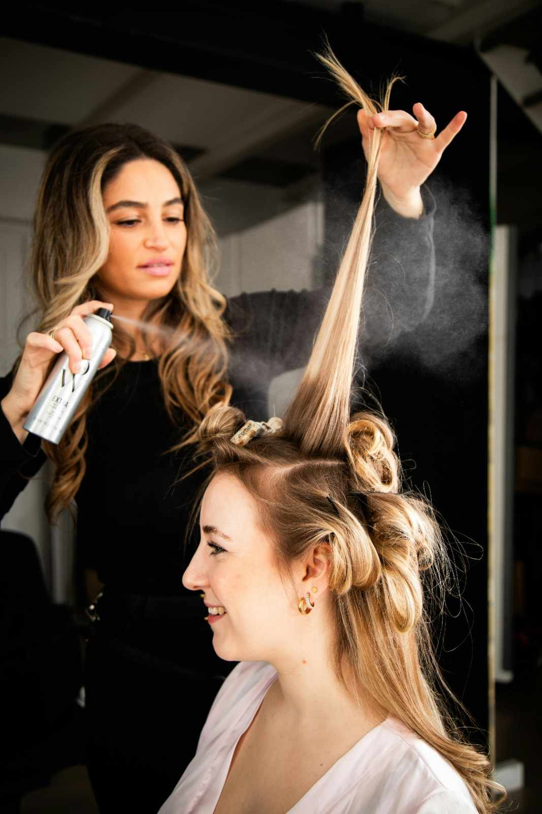
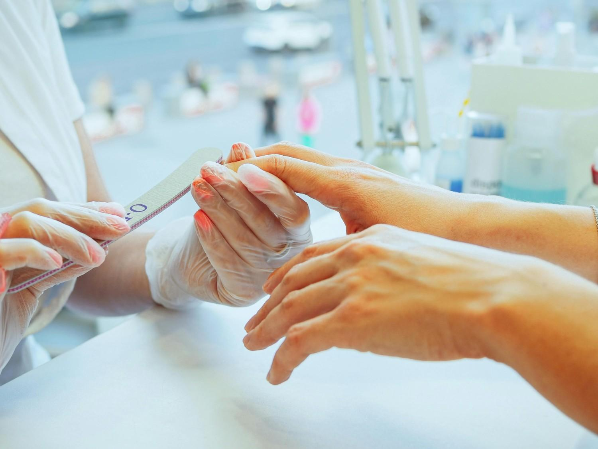
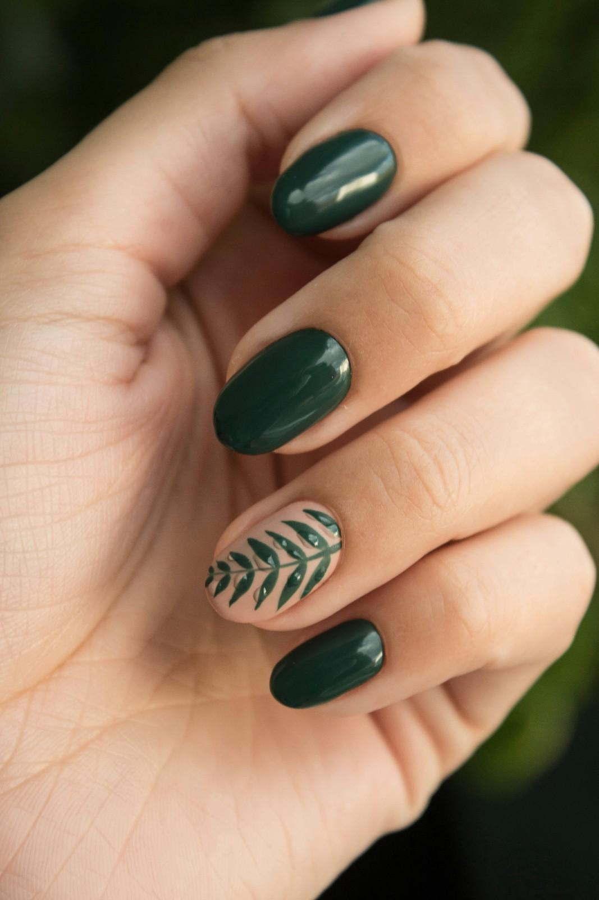

Kannur's Premier Beauty Studio
Redefine Your Natural Beauty
From expert hair transformations to radiant bridal makeovers — Queens Innovation brings luxury beauty care to the heart of Kannur, Kerala.
4.5 / 5 · 686 Google Reviews

Kannur's Premier Beauty Studio
From expert hair transformations to radiant bridal makeovers — Queens Innovation brings luxury beauty care to the heart of Kannur, Kerala.
4.5 / 5 · 686 Google Reviews

Our Story
Queens Innovation is Kannur's trusted destination for holistic beauty care. Nestled at Global Village on Bank Road, we believe every client deserves to feel their most radiant self.
Our skilled team brings artistry and care to every service — from a simple blow-dry to a complete bridal transformation. Rated 4.5 stars with over 686 reviews on Google.
What We Offer

Precision cuts, blowouts, smoothening, keratin treatments, and expert colouring tailored to your face shape and lifestyle.
Flawless, long-lasting bridal looks crafted with premium products — traditional Kerala styles to modern glam.
Rejuvenating facials, clean-ups, de-tan treatments, and personalised skin care for a natural healthy glow.

Relaxing hand and foot treatments with nail art, gel polish, and moisturising care — head to toe perfection.
Swift, hygienic hair removal for face and body — done with care and precision for lasting smoothness.
Get camera-ready with bold, beautiful party and occasion makeup — made to last through every celebration.
Precision cuts, blowouts, and expert colouring.
Flawless, long-lasting bridal looks.
Rejuvenating facials and clean-ups.
Our Work

Bridal Services
Queens Innovation specialises in creating stunning bridal looks that honour Kerala's rich traditions while embracing modern elegance. We work closely with every bride to craft a look that's uniquely hers.
Pre-bridal packages, trial sessions, and full-day bridal packages available. Book early to secure your date.
Enquire About BridalWhat Clients Say
Best haircut, best service with friendly staff. The team really listens to what you want and delivers perfectly. I keep coming back!
All other services like eyebrow threading, waxing, and pedicures are just perfect. Clean, professional, and so relaxing.
Find Us
1st Floor, Global Village, Bank Rd, Kannur, Kerala 670001
Monday – Saturday: 9:00 AM – 5:00 PM Sunday: Closed
Global Village, Bank Road, Kannur Kerala 670001
Open in Google Maps →